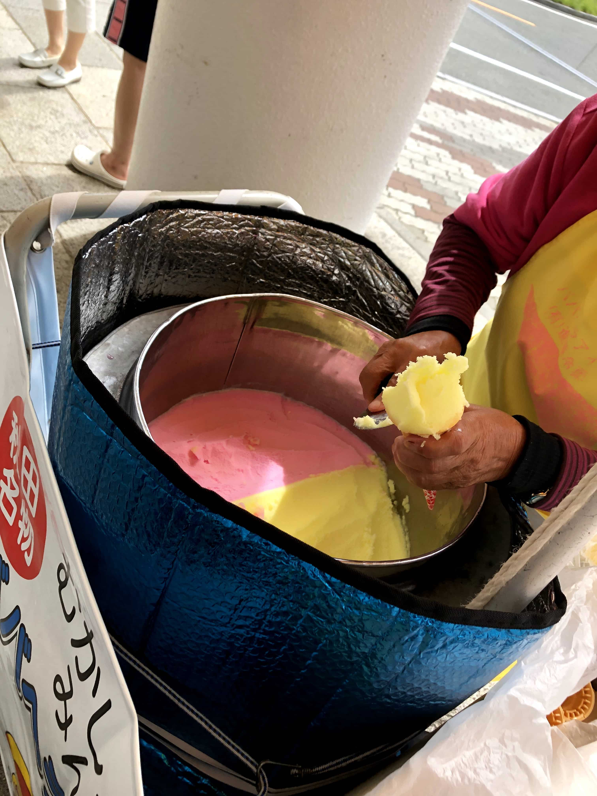
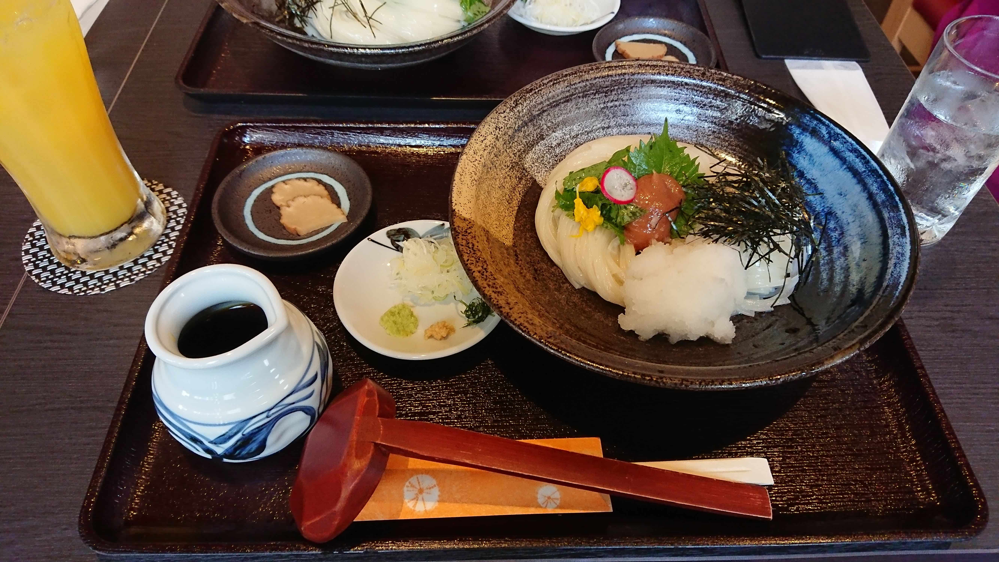
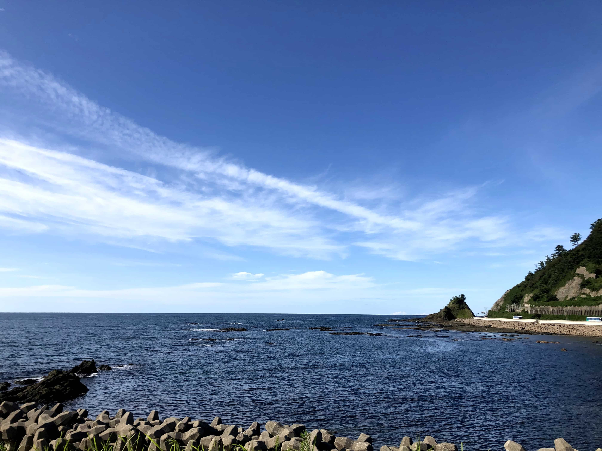
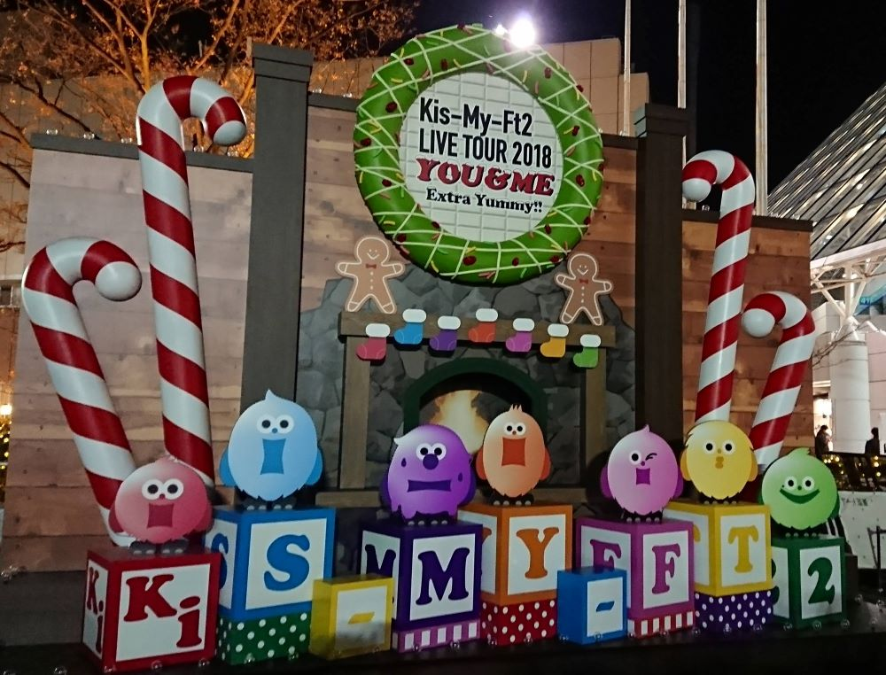

「食」
出身地である秋田県の食べ物で「ババヘラアイス」と「稲庭うどん」が好きです。「ババヘラアイス」は、秋田県では夏の風物詩といっても過言ではありません！夏になると、道路の至るところでカラフルなパラソルの下、おばあちゃんがシャーベット状のアイスを売っています。バナナといちごのミックス味で、爽やかな味わいです。夏になると絶対に食べたい１品です。「稲庭うどん」は日本三大うどんの一つで、細麺が特徴です。魅力はなんといっても滑らかな食感です！一度食べるとやみつきになること間違いなしです。
「景色」
自然を見て癒されることが好きですが、特に海を見ることが好きです。海は天気や季節によって、様々な表情を見せてくれます。落ち込んでいる時に海を見ると、広大な海に比べたら自分の悩みが小さく思えてきて、前向きな気持ちにさせてくれました。ただ、残念なことに、冬の日本海はとても荒々しいので、冬は見ていると少し恐いですが、荒々しい海だからこそ、冬には「ハタハタ」という魚が接岸します。「ハタハタ」は秋田県の冬の風物詩であり、これを食べないと冬は越せません！
「音楽」
ジャニーズのアイドルグループ「Kis-My-Ft2」が好きです。グループ名はメンバー７人の頭文字を取っています。魅力はなんといっても、光GENZIを彷彿とさせるローラースケートのパフォーマンス！ただ踊るだけではない、疾走感あふれるパフォーマンスは圧巻です。メンバー7人とも個性が強く、ただかっこいいだけではなく、少し抜けている部分もあり、親しみやすさも魅力だと思います。コンサートでは、遠くから来たファンと写真を撮り合ったりなど、こんな機会でなければ会えない出会いもあり、毎回刺激になります！



